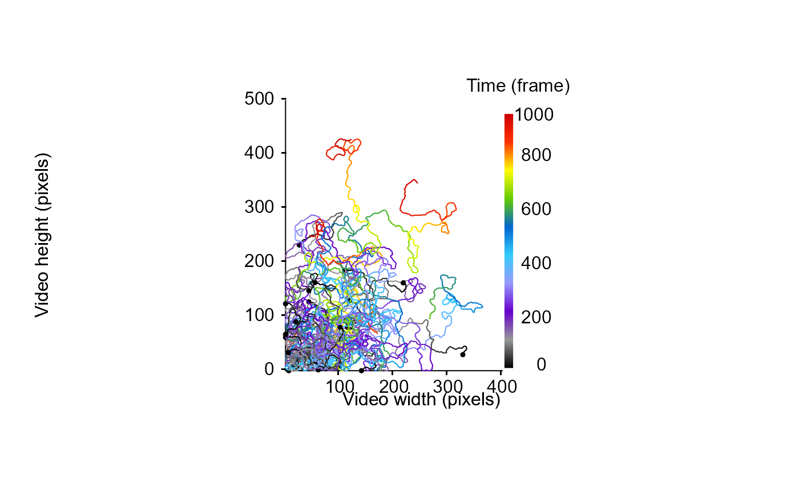

Given a list of data frames containing tracking informations for each tracklet (including the timeline) and a custom function, this function perform the computation specified by the custom function(s) across time and smooth it and returns a list containing as much data frame as the number of custom functions specified by the customFunc argument. Each data frame includes a column indicating the result of the computation, the corresponding timeline as well as the number of tracklets used for the computation.
Usage
temporalTrend(
trackDat,
timeCol = NULL,
customFunc = NULL,
Tinterval = NULL,
Tstep = 1,
sampling = 1,
wtd = FALSE,
progress = TRUE
)Arguments
- trackDat
A list of data frame containing tracking informations for each tracklet.
- timeCol
A character string corresponding to the name of the column containing time information.
- customFunc
A function or a list of functions used to perform the computation across time. NB: in case customFunc is a list of unnamed function it will try to retrieve their names by returning the first character string following the function() call as the name of the results column.
- Tinterval
A vector containing two numeric values expressed in the timeline unit and specifying the time interval on which the computation is performed (default is null, meaning the computation will be performed on the whole timeline).
- Tstep
A numeric value expressed in the timeline unit and specifying the size of the sliding window used to perform the computation (e.g., a value of 200, mean that for each sampling point, the computation is performed using the 100 previous and the 100 next values).
- sampling
A numeric value expressed in the timeline unit and specifying a subsampling used to to perform the computation, allow to make computation faster, it hence determine the resolution of the returned results (e.g., a value of 5000 mean that values will be computed every 5000 time units).
- wtd
A logical value (i.e., TRUE or FALSE) indicating whether the function should compute a weighed metric according to the length of the tracklets (default is FALSE).
- progress
A logical value (i.e., TRUE or FALSE) indicating whether a progress bar should be displayed to inform process progression (default = TRUE).
Value
this function returns a list containing as much data frame as the number of custom functions specified by the customFunc argument. Each dataframe contains 3 columns indicating:
"customFuncName": the result of the computation performed according to the customFunc and averaged over the sliding window specified by the Tstep argument.
"timeCol": the timeline according to timeCol and sampling arguments.
"nbTracklets": the number of tracklets included within each computation.
Examples
set.seed(2023)
# generate some dummy tracklets
## start to specify some parameters to generate tracklets
TrackN <- 25 # the number of tracklet to simulate
TrackL <-
100:1000 # the length of the tracklets or a sequence to randomly sample tracklet length
id <- 0
TrackList <- stats::setNames(lapply(lapply(seq(TrackN), function(i)
trajr::TrajGenerate(sample(TrackL, 1), random = TRUE, fps = 1)), function(j) {
id <<- id + 1
data.frame(
x.pos = j$x - min(j$x),
y.pos = j$y - min(j$y),
frame = j$time,
identity = paste("Tracklet", id, sep = "_")
)
}), seq(TrackN))
# check the tracklets
MoveR::drawTracklets(TrackList,
timeCol = "frame")

# add some metric to the dataset (speed and turning angle) and time unit conversion
TrackListV1 <-
MoveR::analyseTracklets(
TrackList,
customFunc = list(
# specify a first function to compute speed over each tracklet (a modulus present within the MoveR package)
speed = function(x)
MoveR::speed(
x,
timeCol = "frame",
scale = 1),
# compute turning angle in radians over each tracklet (a modulus present within the MoveR package)
TurnAngle = function(x)
MoveR::turnAngle(x,
unit = "radians",
timeCol = "frame",
scale = 1),
# convert the time expressed in frame in second using a conversion factor of 25 frame per second
TimeSec = function(x)
x[["frame"]] / 25,
# or in minutes
TimeMin = function(x)
x[["frame"]] / 25 / 60
)
)
# smooth the speed and the turning angle across tracklets and time, here we perform the computation
# every 50 time unit and on an interval of 100 values, 50 values are taken before and 50 values after the given time unit.
Smoothedtracks <- MoveR::temporalTrend(
trackDat = TrackListV1,
timeCol = "frame",
Tstep = 100,
sampling = 50,
wtd = TRUE,
customFunc = list(
MeanSpeed = function(x)
mean(x[["speed"]], na.rm = T),
MeanTurnAngle = function(x)
mean(x[["TurnAngle"]], na.rm = T)
)
)
# plot the results
par(mfrow = c(1, 2))
plot(Smoothedtracks[["MeanSpeed"]]$MeanSpeed ~ Smoothedtracks[["MeanSpeed"]]$frame, type = "l")
plot(Smoothedtracks[["MeanTurnAngle"]]$MeanTurnAngle ~ Smoothedtracks[["MeanTurnAngle"]]$frame, type = "l")